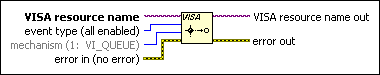

VISA Disable Event Function
Owning Palette: Event Handling VIs and Functions
Requires: Base Development System
Disables servicing of an event.
This operation prevents new event occurrences from being queued. However, event occurrences already queued are not lost. Use the VISA Discard Events VI to discard queued events.

 Add to the block diagram Add to the block diagram |
 Find on the palette Find on the palette |